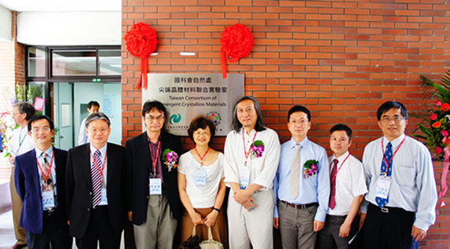

| 繁體中文 | English |
Welcom MBE Lab website !
[Publication]
- Peiyao Zhang, Tenzin Norden, James M. Pientka, Rafal Oszwałdowski, Arman Najafi, Biplob Barman, Yutsung Tsai, Wen-Chung Fan, Wu-Ching Chou, Jong E. Han, Igor Žutić, Bruce D. McCombe, and Athos Petrou, “Optical Control of Hole Wavefunction in Type-II Magnetic Quantum Dot Structures”, J. Phys. Chem. C 123, 25934 (2019).
- Nhu Quynh Diep, Cheng-Wei Liu, Ssu-Kuan Wu, Wu-Ching Chou*, Sa Hoang Huynh, and Edward Yi Chang, “Screw-Dislocation-Driven Growth Mode in two Dimensional GaSe on GaAs(001) Substrates Grown by Molecular Beam Epitaxy”, Scientific Reports 9, 17781 (2019).
- Maria Jessabel Talite, Hsiu-Ying Huang, Kun-Bin Cai, King Chester Capinig Co, Phoa Adelina Cynthia Santoso, Sheng-Hsiung Chang, Wu-Ching Chou,* and Chi-Tsu Yuan*, “Visible-Transparent Luminescent Solar Concentrators Based on Carbon Nanodots in the Siloxane Matrix with Ultrahigh Quantum Yields and Optical Transparency at High-Loading Contents”, The Journal of Physical Chemistry Letters 11, 567 (2020).
- Cheng-Wei Liu, Jin-Ji Dai, Ssu-Kuan Wu, Nhu-Quynh Diep, Sa-Hoang Huynh,Thi-Thu Mai, Hua-Chiang Wen, “Chi-Tsu Yuan, Wu-Ching Chou, Ji-Lin Shen & Huy-Hoang Luc, Substrate-induced strain in 2D layered GaSe materials grown by molecular beam epitaxy”, Scientific Reports 10, 12972(2020)
- Jin-Ji Dai, Thi Thu Mai, Ssu-Kuan Wu, Jing-Rong Peng, Cheng-Wei Liu, Hua-Chiang Wen, Wu-Ching Chou*, Han-Chieh Ho and Wei-Fan Wang, “High Hole Concentration and Diffusion Suppression of Heavily Mg-Doped p-GaN for Application in Enhanced-Mode GaN HEMT”, Nanomaterials, 11, 1766 (2021).
[Taiwan Consortium of Emergent Crystalline Materials (TCECM)]

[Research facility]
Mocular Beam Epitaxy system for II-VI & III-V
Photo-luminescence (PL) spectrum & Cathodo-luminescence (CL) system